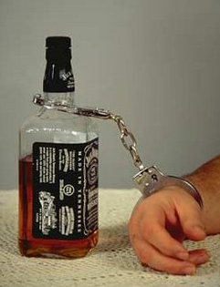

Ucc Albergaria-A-Velha
Home
Quem Somos
O que Fazemos
Consultas
Preparação para o Parto
Desabituação alcoólica
Indicadores
Recursos
Mais Apoio
Home
Quem Somos
Contacte-nos
O que Fazemos
Consultas
Preparação para o Parto
Desabituação alcoólica
Indicadores
Recursos
Mais Apoio
Consulta de desabituação alcoólica
O alcoolismo ou dependência alcoólica é uma doença, frequentemente crónica e progressiva que afecta milhares de pessoas em todo o mundo. Os padrões nocivos e perigosos de consumo de álcool são uma das principais causas de morte prematura e doenças escusáveis. É uma das piores e mais temidas doenças em todo o mundo.
Para todas as pessoas com problemas de álcool em recuperação, a tentação de cair no vício da bebida é enorme e muito forte e isso faz com que a recuperação do alcoolismo seja uma luta constante. Na prática, a forma de lidar com o alcoolismo passa pela força mental e pela capacidade de cada um em ultrapassar obstáculos e dificuldades. Só assim é possível obter a recuperação do alcoolismo.
O tratamento do alcoolismo não é fácil, nem se estabelece de um dia para o outro. Trata-se de um hábito com dependência física e psíquica. Os sintomas de privação do álcool nem sempre se conseguem ultrapassar sem ajuda. Planeie a sua decisão calmamente e, envolva família, amigos e colegas de trabalho no processo.
A Equipa de Saúde da UCC de Albergaria-a-Velha, apresenta uma consulta de desabituação alcoólica que tem como principal objetivo ajudar as pessoas com problemas de álcool a deixar/diminuir o consumo de bebidas alcoólicas e diminuir/eliminar o número de recaídas. É realizada por um Médico e uma Enfermeira Especialista em Saúde Mental e Psiquiatria.
A Equipa é Constituída por
- Médico
- Enfermeira
- Assistente Técnica
